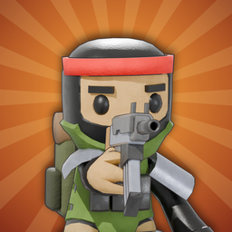

Iron Bandana
Destek · Support
Soru, öneri ya da bir sorun bildirmek için bana e-posta gönderebilirsin. Genellikle 2 iş günü içinde yanıt veririm.
E-posta: neset.salik@gmail.com
For questions, feedback or bug reports, please email the address above. I usually reply within 2 business days.
Sık sorulan sorular
Oyun nasıl oynanır?
Sol taraftaki joystick ile koş, eğil ve merdivenlere tırman. Sağ taraftaki düğmelerle ateş et, zıpla ve el bombası at. Yetenek göstergesi dolunca kahramanının özel yeteneğini kullanabilirsin. Her görevin sonunda bir çıkışa ulaşman ya da bir boss'u yenmen gerekir.
Yıldızlar nasıl kazanılır?
Her görevin üç yıldızı vardır: görevi bitirmek ve görev kartında yazan iki özel hedef (ör. tüm köylüleri kurtarmak, alarmı çaldırmamak). Yeni yıldızlar altın ve madalya kazandırır.
Altın ve madalya ne işe yarar?
Cephanelik'te silahlarını altınla yükseltirsin. Üst seviyeler ayrıca madalya ister; madalyalar satılmaz, yalnızca yeni yıldızlar, boss zaferleri ve günlük görevlerle kazanılır.
Yeni görevler nasıl açılır?
Haritada her görevi bitirdiğinde sıradaki ada açılır. Esmeralda Adaları'ndaki beş görevden sonra Kızıl Takımada'ya geçersin.
Günlük ödüller nedir?
Her gün girdiğinde giriş ödülün büyür (7 günlük seri). Ayrıca her gün üç yeni görev gelir; üçünü de bitirirsen bonus altın ve madalya kazanırsın.
Reklamlar ne zaman çıkar?
Görev sırasında asla. Görev sonunda altını iki katına çıkarmak, başarısız olunca kaldığın yerden bir kez devam etmek ya da günlük ödülü ikiye katlamak için isteğe bağlı reklam izleyebilirsin. Görev sonu ekranından çıkarken, sınırlı sıklıkta kısa bir geçiş reklamı gösterilebilir; ilk görevlerinde gösterilmez. "Reklamsız" satın alırsan geçiş reklamları tamamen kalkar.
Satın aldığım ürünleri nasıl geri yüklerim?
Cephanelik → Mağaza ekranındaki "Satın Alımları Geri Yükle" düğmesiyle. Reklamsız ve Başlangıç Paketi aynı mağaza hesabıyla yeni cihazına geri gelir. Altın paketleri tüketilen ürünlerdir, geri yüklenmez.
İlerlemem kayboldu mu?
Görevlerin, yıldızların, altının ve yükseltmelerin cihazında otomatik kaydedilir. Uygulamayı silersen kayıt da silinir.
Sesi ya da müziği nasıl kapatırım?
Oyun sırasında duraklat düğmesine bas; menüdeki müzik ve efekt düğmelerinden açıp kapatabilirsin.
Reklam izinlerimi nasıl değiştiririm?
Avrupa'daysan duraklat menüsündeki "Gizlilik Seçenekleri" düğmesinden. iPhone'da Ayarlar → Gizlilik ve Güvenlik → İzleme bölümünden; Android'de reklam kimliğini telefonunun Ayarlar → Gizlilik → Reklamlar bölümünden sıfırlayabilirsin.